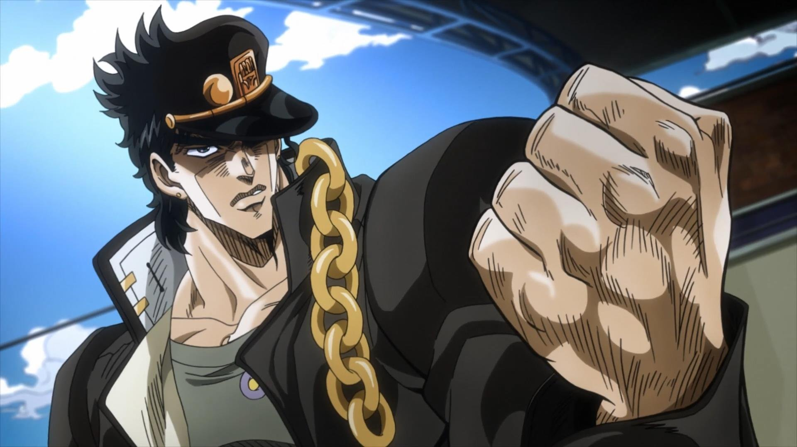
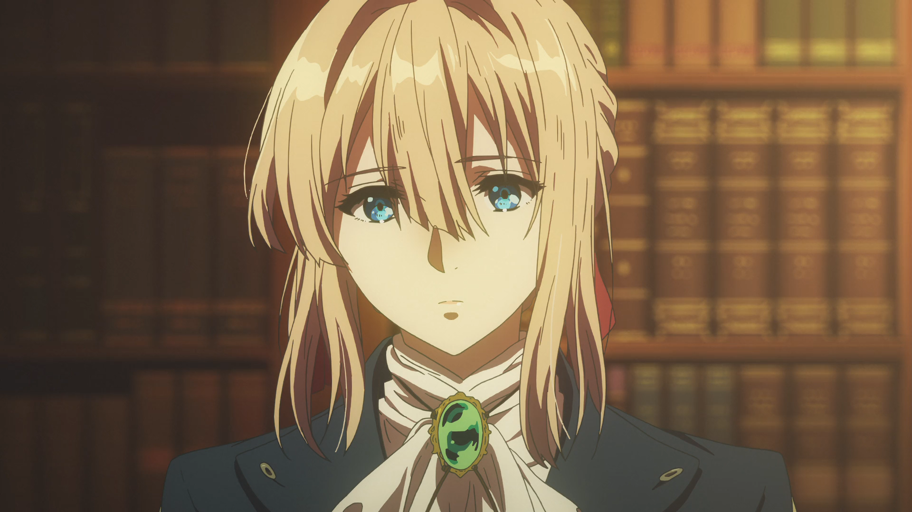
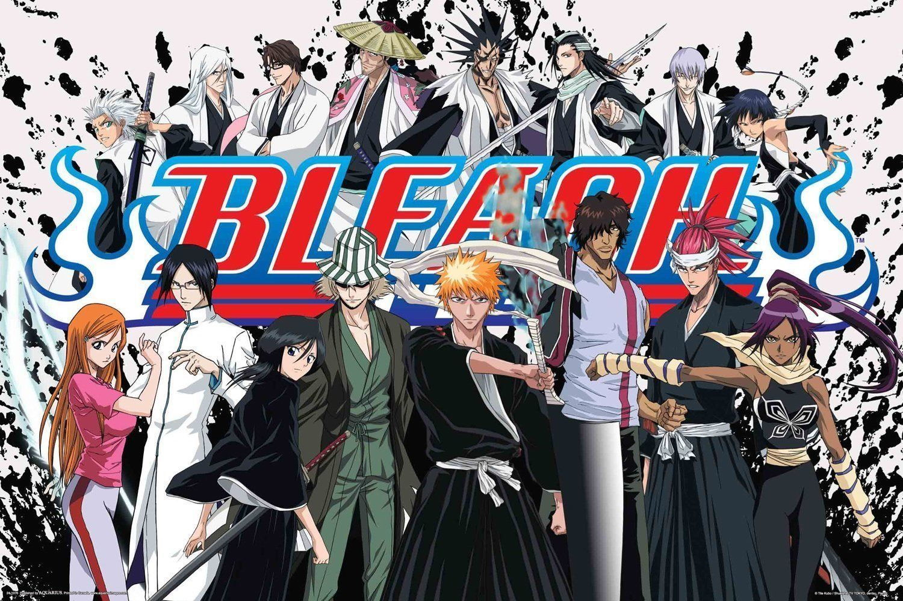
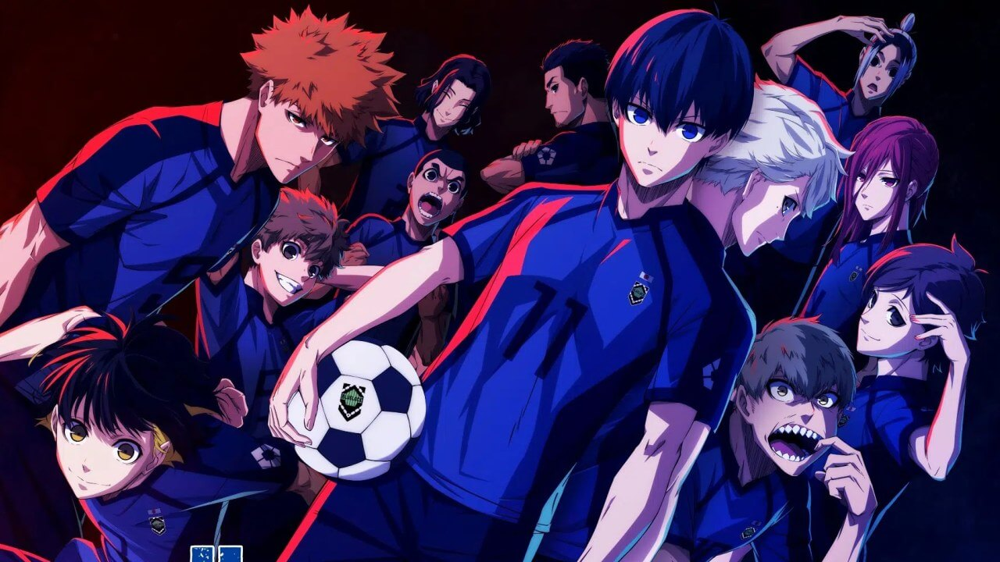
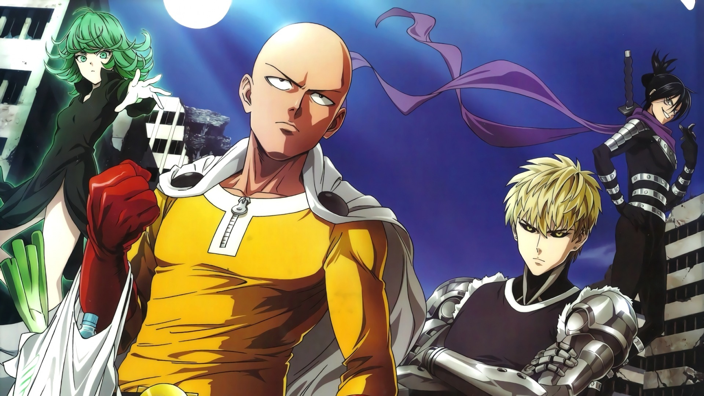

Невероятные приключения ДжоДжо
«Невероятные приключения ДжоДжо» — это аниме-сериал 2012–2022 годов производства Японии. Сюжет: Англия, конец XIX века. Богатый аристократ Джордж Джостар, верный некогда данному слову, принимает в семью осиротевшего бедного парня Дио и теперь относится к нему как к сыну. Родной же сын Джорджа Джонатан совсем не рад новому «брату», ведь тот превосходит его во всём, но вскоре благородство отца обернётся для него настоящей трагедией.
Вайолет Эвергарден
Некогда один известный профессор в помощь своей слепнущей жене-писательнице создал человекоподобную машину, так называемую автозапоминающую куклу. Подобные куклы получили широкое распространение, и вскоре так стали называть сотрудниц почты, которые помогают людям выражать чувства, находя нужные слова и обращая их в письма. Девушка Вайолет, потерявшая на войне обе руки, восхищается работой автозапоминающих кукол. Больше всего на свете она хочет стать одной из них, чтобы научиться понимать эмоции и узнать значение когда-то сказанных ей слов.
Блич
Старшеклассник Итиго Куросаки видит другую сторону этого мира, в том числе и духов. Однажды он встречает девушку, которая умеет отправлять души умерших туда, где им положено быть. Случайно он получает её способности и начинает истреблять злых духов.
Синяя тюрьма: Блю Лок
Чтобы выиграть Чемпионат мира, японская футбольная ассоциация решает нанять загадочного и эксцентричного тренера Дзимпати Эго. Тот в уверенности, что в Японии нет хороших нападающих, создает Блю Лок — тюрьму, где триста юных талантливых футболистов соревнуются друг с другом. Победитель получит право стать нападающим национальной сборной, а проигравшим навсегда запретят играть за сборную. Одним из участников становится Ёити Исаги, который мечтает стать величайшим нападающим в мире и привести Японию к футбольной славе.
Ванпанчмен
Парень по имени Сайтама живёт в мире, иронично похожем на наш. Ему 25, он лыс и прекрасен и к тому же силен настолько, что с одного удара аннигилирует всё, что представляет опасность для человечества. Он ищет себя в этой жизни, попутно раздавая подзатыльники монстрам и злодеям.
